6.810 Engineering Interactive Technologies (fall 2020)
Problem Set Series: Multi-Touch Pad


Problem Set 3 (due Friday, Oct. 23, 2020, 11.59pm)
Now that you have the hardware ready and Arduino sensing code prepared, you will write the Processing code that visualizes the sensor signals and extracts the touch point coordinates. To accomplish this, you will do the following five steps:
- Read the multi-touch sensing data into Processing via the Serial Port.
- Clean the sensing data from noise by determining the noise baseline and subtracting it from the received signals.
- Convert the received signals into grayscale values that can be displayed as pixels in a 9x8 pixel image.
- Scale the image to 500x500px using bicubic interpolation to facilitate touch point extraction.
- Implement blob detection to extract the touch point locations.
Skeleton Code
Start by downloading the skeleton code for the PSet3 from here.
Before you can execute it, you first have to install two libraries (see next step).
Install external libraries
For this PSet, we will be using two Processing libraries:
- OpenCV (a library that helps with image processing, in our case we will draw our touch signals into an image, see picture at start of pset3)
- BlobDetection (a library that helps to find blobs inside of images, in our case the blobs are the touch points on the multi-touch pad)
You can install them directly in Processing by going to:
Sketch/Import Library/Add Library and searching for their name.


(1) Read the Multi-Touch Sensing Data into Processing
Refresher from PSet2
In pset2, you already wrote the Arduino code that reads the receiver pins from the multi-touch pad and writes the resulting data onto the serial port in the following way:
0,50,83,58,79,108,75,82,54 //columm0, row0val, row1val, row2val
1,55,92,120,84,63,61,88,53 //columm1, row0val, row1val, row2val
2,61,64,73,66,92,78,67,57
3,65,117,116,84,48,81,91,71
4,65,128,116,54,76,81,88,59
5,61,86,66,54,114,78,64,64
6,59,86,120,83,85,75,93,63
7,56,86,116,70,72,83,80,64
8,23,82,74,68,98,64,62,52
...
Read Data from Serial Port Into Processing
Next, you need to read this data from the serial port into Processing.
We have already shown you how to read data from the serial port into Processing in Lab 1 & 2 and you can check your prior code from back then to see how to do it.
In the skeleton code, put your code for reading the data into the readSerial() function:

Save Data for One Complete Scanning Pass into a 2D Array
The data for a single pass on all columns and rows should be saved into a 2D array.
When considering the size of your 2D array, remember that we build a 9x8 multi-touch pad.
Printing the 2D array to the Processing command line should look something like this:
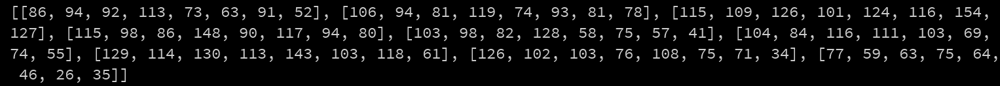
Every time a new pass over all columns/rows starts, you need to override your array values.
(2) Cleaning the Received Signal by Reducing Noise
What is noise?
As you may have noticed, even when you are not touching the multi-touch pad, the receiver pins almost always receive some value although you would expect that they should receive '0'.
This is what we call "noise" in signal processing.
What causes noise?
Noise can be caused by a variety of factors.
On the entire multi-touch pad, noise can be caused by the substrate the multi-touch pad is placed on, i.e. depending on if you place it on a glass table or a metal table the noise level will be different.
Additionally, noise can be different at each of the connection points in the circuit. For instance, each FPC connector and each wire may have different noise levels since the conductive lines all make slightly different levels of contact.
Furthermore, since the inkjet printed circuit may not be perfectly consistent everywhere either because of uneven printing or because of different aging levels over time, the different printed paths may also have different levels of noise.
Finally, in addition to the reasons above, we can also have different noise levels on a single row of electrodes because the distance between the receiver pin and each electrode in the row is different, thus the electodes further away accumulate noise over a larger distance.
All of these factors together result in different noise levels at each point in your multi-touch pad.
Why is noise an issue?
Noise is an issue because it can lead to false positives, i.e. your code may think the multi-touch pad was touched although no interaction occured.
To prevent this, we need to eliminate the noise in our signal.
How can we eliminate the noise?
In order to eliminate the noise and have more "clean" data, there are many different processing steps that one can take.
In our case, we will implement a simple noise baseline filter.
How does a noise baseline filter work?
A noise baseline filter works in two steps:
(1) Record Noise Baseline Signal: First, you need to record the signal when you are not touching the multi-touch pad. The signal is recorded over some period of time and the recorded values are then averaged and saved as the noise baseline value. You only have to do this once at the beginning. In our case, we found that recording 2 seconds of non-touch sensing data is sufficient for the multi-touch noise reduction. Note that we record the noise baseline for every position in our multi-touch pad for the reasons mentioned above, i.e. that every position has its own level of noise. We therefore record the noise baseline for every received value and thus we are having 9x8 = 72 noiseline base values in total.
Implement the noise baseline filtering in the setBaseLine() function and change the boolean baseLineSet in the skeleton code to "true" once the baseline is set:
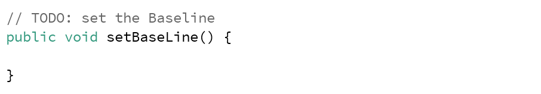
(2) Subtract Noise Baseline from Usage Signal: After you stored the noise baseline for each value, we can look into how to use it to create better signals during the actual user interaction. During interaction, the signal for each value is again recorded but this time you subtract the previously recorded noise baseline value from each new incoming signal value. Thus, if you don't touch the multi-touch pad, the noisy incoming signal minus the noise baseline will equal 0 (or at least be close to it). Therefore, the chance of false positives is much smaller, i.e. the chance that your code thinks that a touch occured although there was none is greatly reduced.
Implement the noise baseline substraction in the subtractBaseLine() function and what ever else todo.
replace image with substractBaseline() function
(3) Converting the Received Signals into Grayscale Values that can be Displayed as an Image
Now that we have "clean" sensing values, our next step is to find out where the multi-touch pad was actually touched.
Using Image Processing for Detecting Touch Points
While there are multiple different ways to find our where the multi-touch pad was touched, we will use an approach based on image-processing.
First, we will convert our sensor signals into grayscale values and then draw the grayscale values into a 9x8 pixel image.
Brighter pixels will correspond to higher sensor signals (i.e. touch points) while darker pixels will correspond to areas that were not touched.
Since image processing on such a small 9x8 pixel image is too difficult, we will increase the size of the image to 500x500px using bicubic interpolation to fill in for the missing pixel values.
After this, we can use 'blob' detection to extra the white blobs in the image (i.e. the touch points) and get the touch coordinates from the blobs.
Let's do this one step at a time.
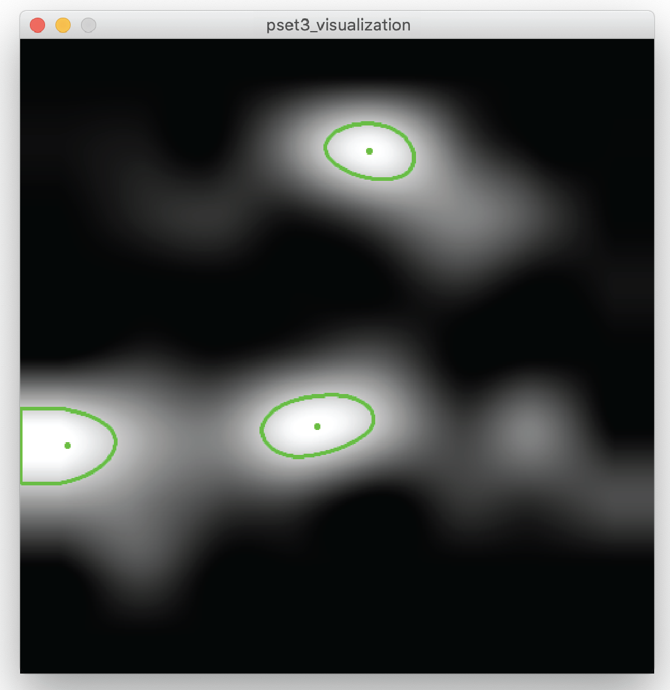
Creating the Image
For our visualization, we will construct an image (PImage) the same size as our 2D array that contains the sensing data.
Note that this PImage will be tiny (9x8 pixel) and you will likely have to search a bit for it on screen if you decide to display it for debugging purposes.
Creating a Grayscale Image
The PImage will be gray-scale since for our purposes we are only interested in brighter vs. darker spots for the purpose of touch detection.
If you set a PImage's pixels to a color value from 0 (black) - 255 (white), it will automatically be treated as grayscale.
Converting the Sensor Signals into Grayscale Values
Before we can draw our sensor signals into the PImage as grayscale values, we have to make sure they have the correct range, i.e. are between 0-255.
We therefore have to scale our sensor signals accordingly.
To scale your sensor values to a range of 0 - 255, you can use the map() function in Processing.
As you can see in the map() function reference, we have set four different values:
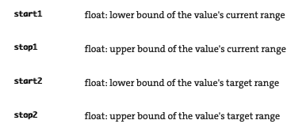
start2/stop2 (target): The last two parameters, i.e. our target range, are pretty straight forward since we already discussed we want to scale to 0 - 255.
start1/stop1 (source): For the source parameter, use the highest sensor reading when you are not touching and lowest sensor reading when you are touching for now. We will revisit this later and it will become more clear why that is a good strategy.
After you scaled them, use them to set the pixel color of each pixel in the 9x8 pixel PImage.
Don't worry at this point if you can't see the effect in the image, just make sure all your pixel values are scaled to a value of 0-255.
Put your code into the setColors() function in the skeleton code:
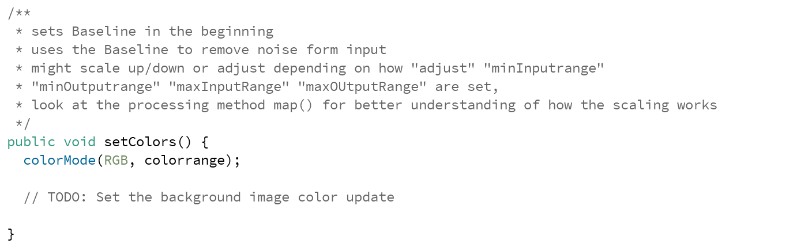
Why is this colorMode RGB? very confusing, can you add some comments that we will use this as grayscale? remove the baseline subtraction from here. the comments are a bit confused in the code as well. what are the different values you are mentioning there? we should explain those values here as well?
(4) Scaling up the Generated Image Using Bicubic Interpolation
Why do we need to scale our image?
While the tiny 9x8 pixel PImage that we just created is accurately representing our sensor values, (Junyi can you say better why we need to scale it up and can't leave it small?) it is too small to detect the touch positions.
We therefore have to scale up the image to a size that is more suitable for further image processing, such as blob detection.
In our case, we want to scale up the image to 500px x 500px.
Since our original tiny 9x8 pixel image only contains 9x8 values, we need to figure out what values we should use for all the newly generated 'gaps' in the 500x500px image since it needs 500x500 values to be completely filled in at each pixel.
To do this, we use a technique called interpolation.
What is interpolation?
Interpolation can help fill in values where no actual values are present and can thus help us determine what value the 'in-between' pixels in our 500x500px image should have.
There are many different interpolation techniques of different complexity levels that can be used to interpolate the pixel values in a way that it creates a smooth scaled up appearance of our original color values from our signals.
For our case, we consider bi-linear and bi-cubic interpolation.
What is the difference between bi-linear and bi-cubic interpolation?
Bi-linear interpolation: is performed using linear interpolation first in one direction, and then again in the other direction. For instance, in the example below where we want to determine the value of the central pixel, we first interpolate the value of the top and bottom pixel, and then interpolate the left and right pixel. We then average both the interpolate values to retrieve the final pixel value).
Bi-cubic interpolation: is performed by taking into account 16 (4x4) (really?) neighboring pixels. To compute the needed pixel value, all values are averaged together?
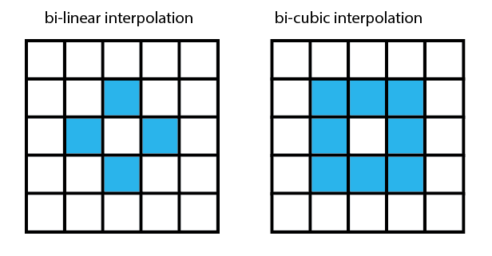
Thus, a benefit of bicubic interpolation is that it gives you a more accurate and smoother interpolation result since it considers more values than bilinear interpolation. However, this also comes at the drawback of higher computational power needed since more values need to be processed to generate the interpolated value. For our small multi-touch pad with only a few hundred interpolated values this is not an issue but if you had to do more interpolation it may slow the processing down and the multi-touch pad would start lagging.
You can see the difference of bi-liner vs. bi-cubic interpolation in the images below (these are from the internet and not from our multi-touch pad (Junyi: it would be a lot better to show the result at the example of our multi-touch pad being touched, if this is just a opencv function, can you take these pictures?)). In the images the input data was 5x5px and it was scaled up to what image size?
 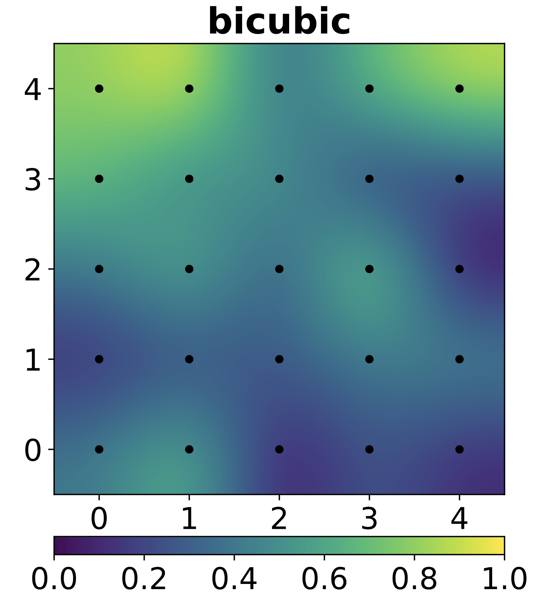
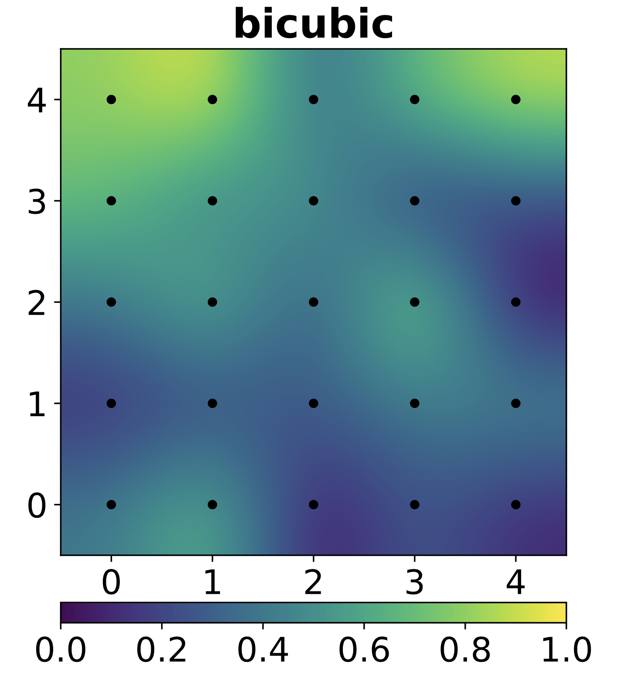
Implementing Bi-Cubic Interpolation with OpenCV
Luckily, you do not have to implement the bicubic interpolation from scratch.
There is an image processing and computer vision library called OpenCV.
OpenCV exists as a library for many different programming languages, in our case we will use OpenCV's implementation for Java and more specifically for Processing.
Remember, at the beginning of this pset3, you already installed the OpenCV library.
If you scroll up in your skeleton code, you can see that we already imported several classes of the library with
import gab.opencv.*;
import org.opencv.imgproc.Imgproc;
import org.opencv.core.Mat;
import org.opencv.core.Size;
If you look at the documentation of the Imgproc class, you will see that it provides a static resize() function, which also allows us to specify which interpolation we want to use.
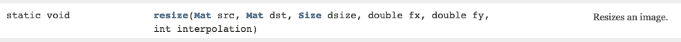
So let's see how we can fill out the parameters.
Mat src: This is the input image (9x8px) that we want to resize. As you can see, the image here is in the format Mat (Matrix) and not PImage. We therefore first have to convert our PImage into a Mat. In image processing, images are handles as 2D matrices, where every matrix entry is the color value of one pixel (i.e. 0-255 in our case). You can also think of the 2D matrix as a 2D array with pixel values in rows and columns.
Before we can convert our PImage into a Mat, we first have to construct a new OpenCV object.
For this, you need to call the corresponding OpenCV constructor in the OpenCV class documentation.
Once you constructed your OpenCV object, you can call the getGray() function on it to retrieve the image as a Mat (check the class documentation again). This is your src input parameter.
Mat dest: This is the output image, i.e. the resized 500x500px image. Again it needs to be in the format of a matrix. For the output image, we want to create a new empty matrix of our desired size. You can find the OpenCV Mat Reference here.
Similar to how other variables have a type, e.g. int or float, matrices also have types, which describe what types of values can be stored in them. Since we want to make sure the input and the output images match, you need to reference the image type of your source matrix as the argument. If you check the Mat reference again, you can see that there is an instance function for getting the matrix type, which you should use as the argument.
Size dsize: You can find the OpenCV Size Reference here. Construct a new Size object with 500x500px.
double fx, double fy: These are scale factors but since we don't want to scale our image any further, we set these to 0.
int interpolation: These are the different interpolation options. If you look at the different fields in the OpenCV Imgproc Reference, you will see that there are several options, such as:

We want to use the inter-cubic option as our last parameter.
Implement this part in the interpolate() function in the skeleton code:
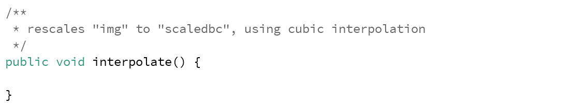
Convert Matrix back to PImage: Finally, after you resized the image with our desired interpolation method, you have to convert your output matrix back into a PImage. For this, you can go back to the OpenCV class documentation and look for the method that gives you a PImage.
This should also still go into the interpolate function in the skeleton code.
Checking Your Results:
Once you finished the interpolation, you should be able to see images like the ones below. The image should be darker when the multi-touch pad is not touched and have some bright spots when the multi-touch pad is touched. What exactly you see depends on your specific noise level and how well your noise baseline works.
Not Touched:
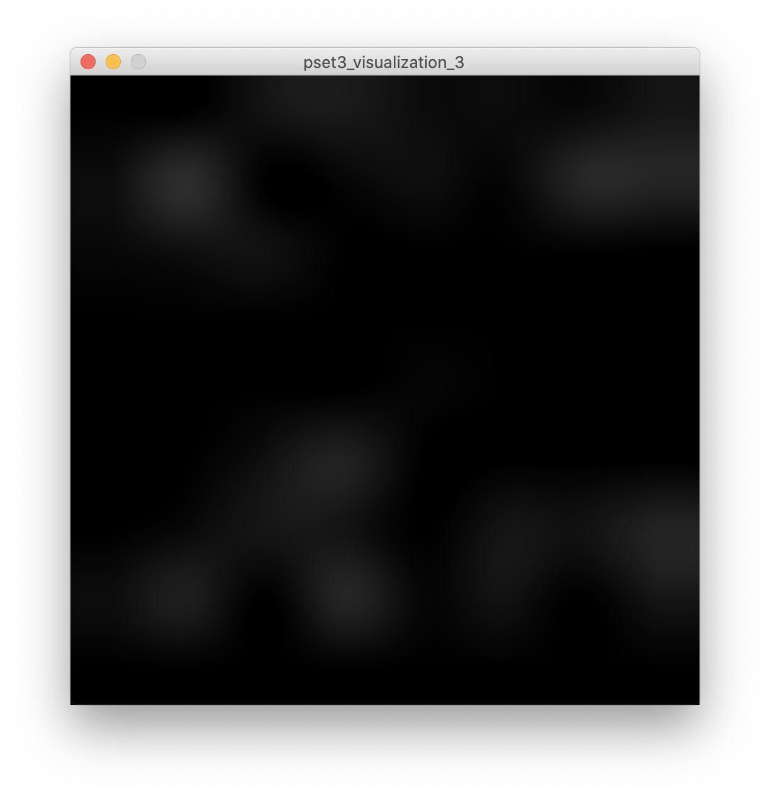
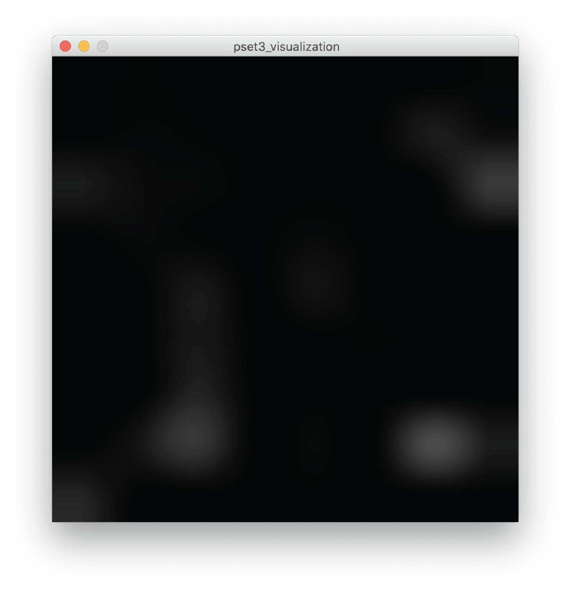
Touched:
left: 1 finger touching, right: 2 fingers touching
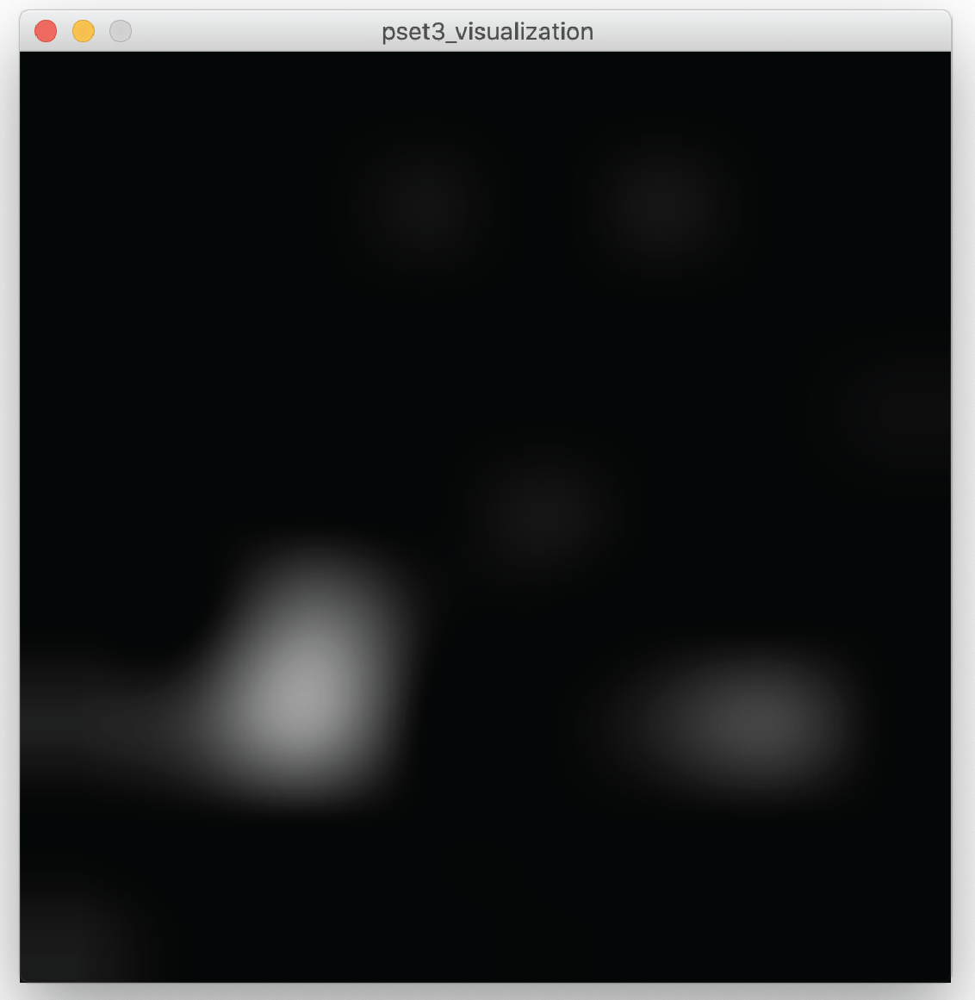
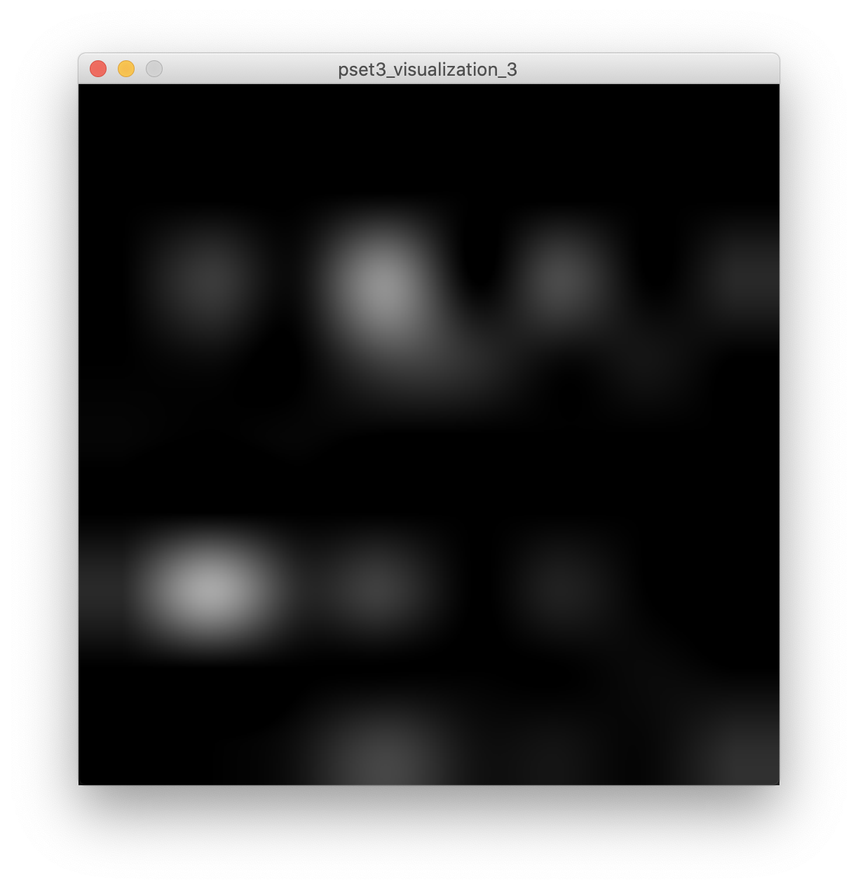
Improving your Results
If your results don't look as good as above, try changing how you map your sensors signals to the values from 0 - 255. Remember, when you mapped your sensor signals to the 0 - 255 range, we had recommended that you use the highest sensor reading when not touching to map to 0 (black), and the lowest sensor reading when touching to 255 (white). Let's assume for a moment your lowest sensor reading when touching was 1500 and you mapped it to 255 (white). As a result, any sensor reading above 1500 is now leading to white pixels, whereas anything below will lead to darker pixels. If you find that you only see dark areas in your image and nothing is white, then perhaps the 1500 threshold is too high. Consider using a lower value to increase what signal values are being treated as 'touched' white pixels. Similarly, if you see too much noise in your image, i.e. everything is white, perhaps your non-touch sensor reading value is too low and you should set it to something higher, so that more signal values are treated as black non-touch pixels. Note that this will also change every time you place your multi-touch pad on a different subtrate (e.g. different surface) or if anything else in your environment undergoes a significant change (e.g. increase in humidity).
(5) Implement blob detection
Finally, while you can now visually determine where the multi-touch pad was touched yourself, we also want to teach our program to do this automatically and tell us at which (x,y) coordinate it sees a touch point.
To do this, we want to write code that detects the white 'blobs' in the image.
This is called 'blob detection'.
How does Blob Detection work?
add some sentences on how blob detection works.
Implementating Blob Detection: Finding Blobs in the Image
Lucky for us, somebody else has already provided a library with the blob detection algorithm.
You already installed that library at the beginning of this pset and we already imported it into the skeleton code here:
import blobDetection.*;
Next, we want to extract the blobs in our image.
You can see the BlobDetection Reference here for details on the different functions.
First, construct a new object of the class using our interpolated PImage height and width.
You can then use the computeBlobs() function to detect the blobs.
Finally, the getBlob() and getBlobNb() functions can help you to retrieve the blobs.
If your blob detection is not finding all the blobs in your image, consider using the setThreshold() function to determine which brightness levels from 0-255 should be taking into account when searching for blobs.
Implement this in the drawBlobsAndEdges() function in the skeleton code (note that we will do the drawing in the next step):
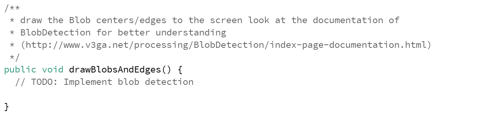
Drawing Blob Centers and Contours Into the Image
Next, we want to extract for each blob:
- the center of the blob (i.e., center of the touch point)
- the contour of blob (i.e., the outline of the touch point)
And then draw the touch point, the finger outline, and the touch coordinates as (x,y) into our PImage.
To extract the touch point and contour, you can go back to the documentation of the BlobDetection library.
The Blob class should give you all you need.
Note that the contour is provided as a list of edges (i.e. lines).
Drawing the contour, touch point, and text coordinates into the image is similar to what you already did in your pset1 Processing application.
Checking your Results
Once you finished this part, you should be seeing something like this depending on if one or multiple fingers are touching:
update images with touch coordinates (x,y)
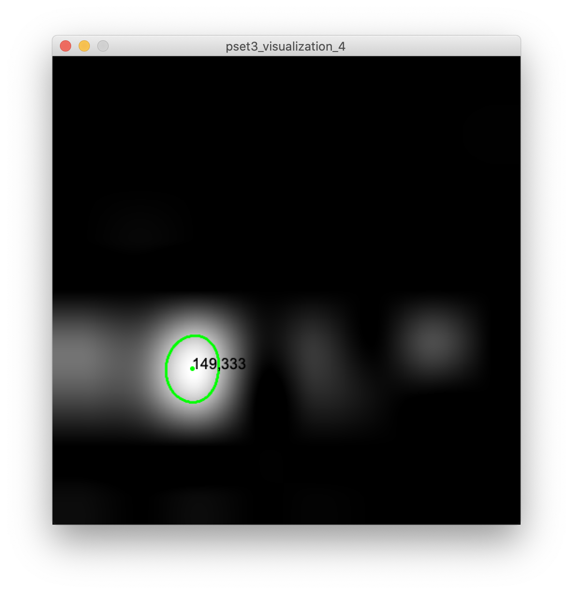
 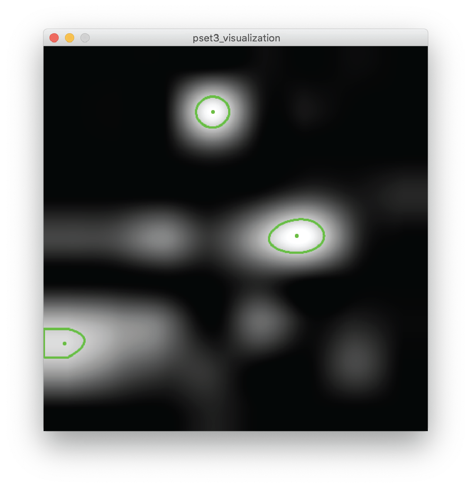
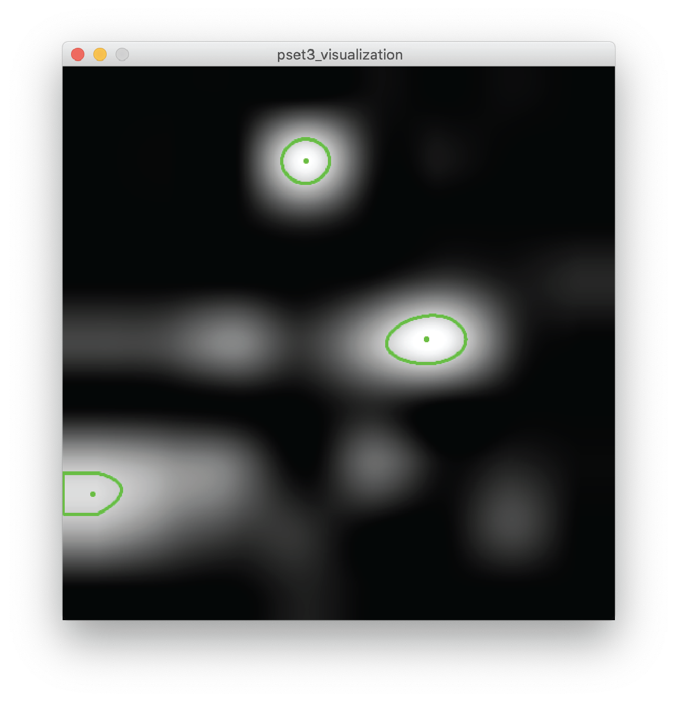
Upload your Processing Code and pictures of Your visualization UI
For grading, please upload the following to your google drive student folder:
- the .pde file of your Processing program
- 3 photos showing your Processing UI works with one, two, and three fingers touching the multi-touch pad
- a short video showing the Processing program working, i.e. show that the Processing UI correctly identifying one, two, and three fingers respectively touching the multi-touch pad and displays at the correct locations. Make sure the Processing UI, your multitouch pad and your fingers are visible at the same time.
Grading
We will give 25 pts in total:
- 5 pts: you finished all for steps of the task.
- 5 pts: read sensing data from serial port and save them correctly.
- 5 pts: set the noise baseline correctly, e.g. record the first 2 sec of the sensing data as noise baseline.
- 5 pts: update the background image color and perform bicubic interpolation correctly.
- 5 pts: implement blob detection correctly.